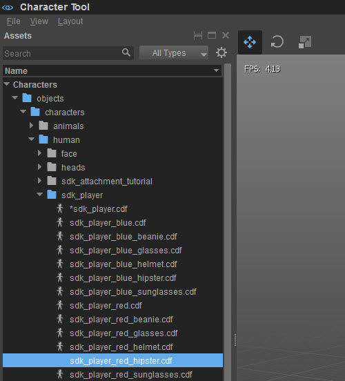
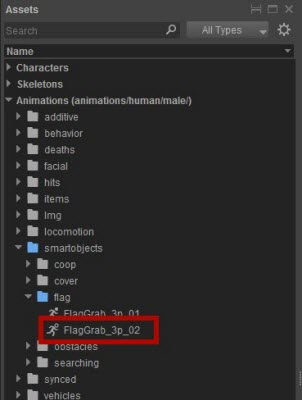
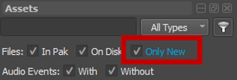
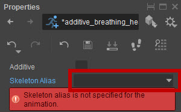

Обзор
Процесс импорта анимации состоит из следующих шагов:
Загрузите существующего персонажа в Проводник, нажав на него double:

Найдите только что созданную анимацию в группе «Анимации» в проводнике и выберите ее. Все неимпортированные анимации имеют иконку бегущего человека с дыркой в голове. Обратите внимание на различия в значках ниже, показывающих скомпилированную и некомпилированную анимацию ниже:
- FlagGrab_3p_01 — Бегущий мужчина с твердой головой.
- FlagGrab_3p_02 — Бегущий мужчина с дыркой в голове.

Если вам сложно найти новую анимацию, вы можете использовать для этого расширенные параметры фильтрации. Нажмите кнопку Фильтр в правом верхнем углу панели «Ресурсы», а затем установите флажок «Только новые»:

Если вы по-прежнему не видите анимацию:
- Убедитесь, что папка, в которой они находятся, находится в списке анимаций для этого персонажа (см. раздел «Определение списка анимаций» в Создание определения персонажа — Character Tool.
- Возможно, анимация не скомпилировалась. Найдите в журнале ошибки RC.
Возможно, вам придется выбрать псевдоним скелета, если Character Tool не смог сопоставить загруженный символ с псевдонимом скелета.
Для этого нажмите на флажок рядом с Скелет псевдоним в Свойствах и выберите нужный скелет из контекстного меню:

Если вашего скелета нет в списке, вы можете добавить его туда через Сжатие/Список скелетов. См. Создание определения персонажа для получения подробной информации.